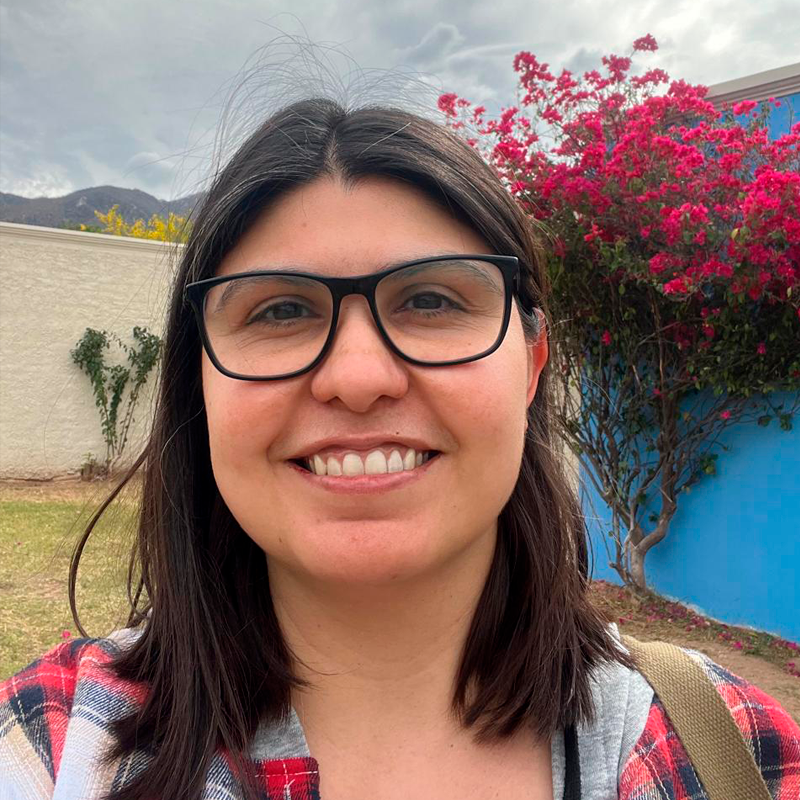
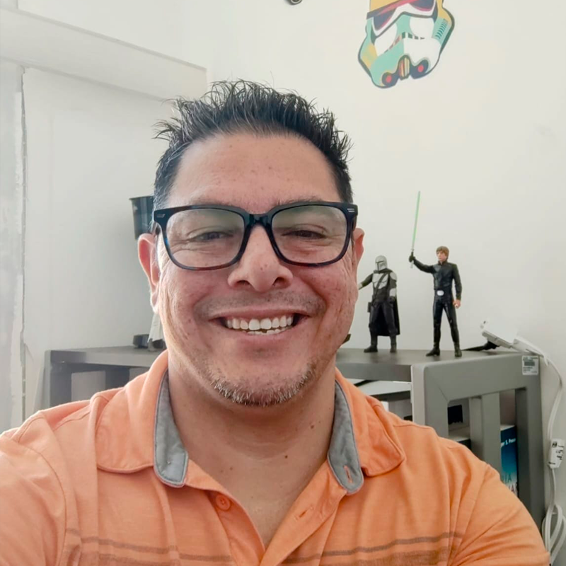

Taller MexIHC 2026
Envejecimiento en casa: Diseño, implementación y evaluación en contextos reales
Un espacio interdisciplinario para discutir tecnologías centradas en las personas que promuevan autonomía, bienestar y calidad de vida de personas mayores en el hogar.
Tema central
Tecnologías para envejecer en casa con autonomía, bienestar y cuidado centrado en la persona
El taller se enfoca en soluciones de HCI evaluadas en contextos reales: hogares inteligentes, monitoreo remoto, IA, salud digital y diseño participativo con personas mayores, cuidadores y profesionales de la salud.
Hasta 6 páginas sin incluir referencias
Position Paper hasta 2 páginas
Artículos cortos en plantilla MexIHC
Tópicos de interés
Temas para trabajos, demos y discusiones
Envejecimiento en casa y tecnologías para la vida independiente
Diseño participativo con personas mayores y cuidadores
Tecnologías para salud, bienestar y calidad de vida
Hogares inteligentes y ambientes asistidos
Monitoreo remoto y tecnologías ubicuas
Biomarcadores digitales y fenotipado digital
Inteligencia Artificial para apoyo al envejecimiento saludable
Tecnologías para combatir el aislamiento social y la soledad
Evaluación longitudinal de tecnologías en el hogar
Consideraciones éticas, privacidad y autonomía
Apropiación y adopción tecnológica en adultos mayores
Acerca del taller
Diseñar tecnologías para vivir y envejecer con autonomía
Objetivos
Este taller tiene como objetivo reunir a investigadores, estudiantes, profesionales, cuidadores y adultos mayores interesados en el diseño, implementación y evaluaciones propias de la Interacción Humano-Computadora que promuevan la calidad de vida, autonomía y bienestar de las personas mayores en el hogar.
A través del intercambio de experiencias, metodologías y casos de estudio, los participantes discutirán los retos y oportunidades asociados con el desarrollo de soluciones tecnológicas para apoyar el envejecimiento saludable, la vida independiente y el cuidado centrado en la persona.
El taller busca fomentar colaboraciones interdisciplinarias y fortalecer la comunidad de investigación dedicada al envejecimiento y la tecnología.
Relevancia
HCI con impacto social en escenarios reales
La investigación en Interacción Humano-Computadora ha evolucionado más allá del desarrollo de interfaces para abordar desafíos sociales relacionados con la salud y en particular con las tecnologías que permitan a los adultos mayores a permanecer en casa de manera segura e independiente. En este contexto, existe una creciente necesidad de compartir experiencias, metodologías y lecciones aprendidas derivadas de proyectos desarrollados en escenarios de personas mayores viviendo solas.
Este taller busca crear un espacio de discusión e intercambio para investigadores, estudiantes, profesionales, cuidadores y adultos mayores interesados en el diseño, implementación y evaluaciones dentro de la Interacción Humano-Computadora con impacto social. El enfoque del taller se alinea con la visión de MexIHC de promover investigación relevante para las necesidades de la sociedad, fomentando la colaboración interdisciplinaria y la generación de soluciones tecnológicas centradas en las personas.
Además, el taller permitirá visibilizar experiencias e identificar necesidades, retos, barreras, tecnologías existentes en áreas como envejecimiento en casa, bienestar y salud digital, accesibilidad, apoyo a cuidadores, participación social y tecnologías emergentes para personas mayores.
Público objetivo
Una conversación abierta entre investigación, diseño y cuidado
Estudiantes de licenciatura y posgrado
Investigadores en HCI
Profesionales en diseño de interacción
Desarrolladores de tecnologías para envejecimiento saludable
Profesionales de la salud y cuidadores
Contenido y agenda
Presentaciones breves, discusión colaborativa y cierre común
El taller combina, un presentación principal, presentaciones breves, discusiones colaborativas y actividades de reflexión para explorar desde el punto de vista de HCI el diseño, implementación y evaluación de tecnologías para promover la autonomía, el bienestar y la calidad de vida de las personas mayores en el hogar.
Introducción al taller
Bienvenida, presentación de organizadores, participantes y objetivos del taller.
Keynote
Dr. Alison Grittner
Associate Professor, Spatial Justice Researcher, Designer, & Educator, Cape Breton University, Canada.
Aging in the Right Place in Rural Communities.
Sesión 1: Diseñando para envejecer en casa
5 presentaciones cortas: 7 minutos de presentación y 3 minutos de preguntas.
Resumen y conclusiones de la sesión 1
Síntesis de desafíos, necesidades y oportunidades identificadas.
Receso
Café y networking informal.
Sesión 2: Diseñando para envejecer en casa
5 presentaciones cortas: 7 minutos de presentación y 3 minutos de preguntas.
Discusión grupal
¿Cómo medir el impacto de la tecnología en personas mayores?: Los participantes compartirán experiencias en HCI relacionadas con estudios longitudinales, salud digital, biomarcadores digitales, fenotipado digital, monitoreo remoto, métodos mixtos, privacidad, ética y evaluación de resultados asociados con autonomía, bienestar y calidad de vida.
Reflexión final y cierre
Construcción de una agenda de investigación sobre tecnologías para el envejecimiento saludable, identificación de oportunidades de colaboración y definición de retos prioritarios para la comunidad de IHC.
Convocatoria
Criterios de evaluación considerados
Los trabajos en la modalidad tradicional aceptados serán publicados en la revista: Avances en Interacción Humano-Computadora (AIHC) de la AmexIHC, en la sección para Trabajos en Progreso.
Se informa sobre la modalidad de Position papers, los cuales son trabajos con una extensión máxima de dos cuartillas. Se tendrán dos opciones para esta modalidad:
1.- Publicación en la revista en un esquema similar a los Posters (costo de $1,600 MXN).
2.- Publicación en la página del evento, en un esquema similar a la competencia de diseño SDC (costo de $600 MXN).
Para realizar el pago de inscripción de autores, visitar la página de MexIHC.
Envía un artículo corto de hasta 6 páginas sin incluir referencias
Publicación: Todos los artículos aceptados serán publicados en un número especial de la revista AMexIHC Avances en Interacción Humano-Computadora.
Formato: Plantilla oficial de MexIHC
Envío de trabajos: Da clic en el siguiente enlace
Enfoque: Diseño, implementación y evaluación de tecnologías para autonomía, bienestar y vida independiente en el hogar.
Organizadores
Equipo organizador
Lizbeth Olivia Escobedo Bravo
Faculty of Computer Science, Dalhousie University, Canadá
lizbeth.escobedo@dal.caComité de programa
Comité de programa



Jessica Beltrán Márquez
Universidad Autónoma de Coahuila
Centro de Investigación en Matemáticas Aplicadas
jessicabeltran@uadec.edu.mx
Fechas importantes
Calendario
Límite extendido para recepción de artículos
Notificación de aceptación de trabajos
Entrega de versión final (Camera Ready)
Celebración de MexIHC 2026